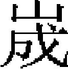

楊大淵文安 劉整垓 夏貴 吕文焕師夔 范文虎 管如德 王積翁都中 朱焕霽 陳奕巖 蒲壽庚 馬成龍 周全
楊大淵，成州天水人。與兄大全、弟大楫皆仕宋。大淵總兵守閬州。憲宗伐宋，圍閬州大獲城，遣宋降臣王仲入招大淵，大淵殺之。帝怒，督諸軍力攻，大淵懼，遂以城降。帝欲誅之，汪田哥諫，獲免。命招降蓬、廣安諸州。進攻釣魚山，擢大楫爲管軍總管，從諸王攻禮義城。憲宗九年，拜大淵侍郎、都行省，悉以閫外之任委之。
世祖中統元年，詔諭大淵曰：「尚厲忠貞之節，共成康乂之功。」大淵既拜命，即遣兵進攻禮義城，掠其饋運，獲總管黄文才、路鈐、高坦之以歸。二年秋，與宋將鮮恭戰，獲其統制白繼源。行省以大淵功言於朝，詔給虎符一、金符五、銀符五十七，令論功行賞，以名聞。三年春，世祖命大淵出開、達，與宋兵戰於平田，復戰於巴渠，擒其知軍范燮、統制魏興等。
先是，大淵建言，謂取江南必先取蜀，取蜀必先據夔州。乃遣其姪文安攻宋巴渠。至萬安寨，守將盧埴降。復使文安相夔、達要衝，城蟠龍山。山四面巖阻，可以進攻退守。城未畢，宋夔州路提刑鄭子發曰：「蟠龍，夔之咽喉，此必争之地也。」遂悉衆來攻。大淵聞有宋兵，即遣姪安撫使文仲赴援。宋兵宵遁，追敗之。秋七月，詔以金符十、銀符十九，賜其麾下將士，别給海青符二，俾事亟則馳奏。又賞合州之功［一］，賜白金五十兩。冬，大淵入覲，拜東川都元帥，與征南都元帥欽察同署事。大淵還，復城虎嘯山，以逼宋大良城，不踰時而就。
四年，宋賈似道遣楊琳賫空名告身及蠟書、金幣，誘大淵南歸。文安擒之以聞，詔誅琳。五月，世祖以大淵及張大悦復神山功，賜蒙古、漢軍鈔百錠。至元元年，大淵進花羅、紅邊絹各百五十段。詔曰：「所貢幣帛，已見忠勤，卿守邊陲，宜加優恤。今後以此自給，俟有詔乃進。」冬十月，大淵諜知宋總統祁昌由間道運糧入得漢城，乃率軍掩襲擒昌等於椒坪，俘獲輜重以數千計。明日，宋都統張思廣引兵來援，復大破之，擒其將盛總管。
二年，大淵以疾卒。八年，追封閬中郡公，諡肅翼。子文粲，襲閬、蓬、廣安、順慶、夔府等路都元帥。兄子文安。
文安，字泰叔。父大全，仕宋，守叙州。大兵入蜀，大全戰没，宋贈眉州防禦使，諡愍忠，官其長子文仲。文安方二歲，母劉氏鞠之，依叔父大淵於閬州。大淵降，授文仲安撫使。
中統元年，擢文安監軍，攻禮義城，奪其糧船。繞出通川，獲宋將黄文才、高坦之。二年，復出通川，與宋將鮮恭大戰，擒統制白繼源。三年，出開、達，擒知軍范燮、統制魏興等，授文安開、達、忠、萬、梁山等處招討使。遂築蟠龍城，以據夔、達要路。宋兵來争，文安擊敗之。四年，佩銀符，擢千户，監軍如故，進築虎嘯城。至元元年，宋都統張喜引兵攻蟠龍，敗之。喜潛師宵遁，出得漢城，文安又追擊敗之。復築方斗城，爲蟠龍聲援，令裨將高先守之。宋兵攻潼川，行省命文安赴援，敗宋師於射洪之納垻。宋都統祁昌以重兵運糧餉得漢，大淵命文安邀之。昌立栅椒原以守，連戰三日，獲昌，俘守將向良家屬，以招良，良以城降。
二年，改授金符，仍前職，還攻宋開、達等州，擒其統制張剛。八月，宋兵由開州運糧，文安率奇兵邀擊之，獲總管方富等。行省上其功，擢夔東路征行元帥，命以前後所俘入見，賜黄金、鞍馬有差。還，攻宋金州斷虎隘，殺其將梁富，擒路鈐、趙貴等。
三年春，率千户李吉等略開州，與宋將硬弓張大戰，獲統制陳德等。冬，總帥汪惟正遣裨將李木波等由間道襲開州，文安遣千户王福引兵助之。福先登，宋將龐彦海投崖死，擒副將劉安仁，留兵戍其地。宋諸路兵來援，圍城三匝，又築壘於城外。文安密遣人入城，諭以堅守。四年春，文安率兵斷宋人糧道。飛矢中文安面，拔矢力戰，大破之，殺其將張德等。已而文安以創甚，回蟠龍，宋兵遂陷開州。
五年，文仲卒。詔文安就佩金虎符，充閬州夔東路安撫使、軍民元帥，仍相副都元帥府事。閬州户口凋耗，文安教以耕桑。鰥寡不能自存，願相配偶者，並爲一户充役，民始復業。七年，從嚴忠範攻重慶，大戰於龍坎，敗宋兵。攻鏵鐵寨，擒其將袁宜、何世賢等。捷聞，詔賜白金、寶鈔、幣帛有差。冬，文粲入見，帝諭之曰：「汝兄弟宣力邊陲，朕所知也。」進文安階明威將軍。
八年秋，文安會東川統軍匣剌攻達州，三戰三捷。帝深加獎諭，進昭勇大將軍、東川路征南招討使，復賜金銀、寶鈔、鞍馬、弓矢，幣帛。
九年秋，築金湯城，積屯田之粟，以逼宋龍爪城。知宋兵必至，遣韓福出通川以牽制之，與宋兵遇於銼耳山，敗之。宋兵輸糧達州，邀擊於盧灘峽，擒統制孫聰、張順等。宋兵復由羅頂山輸糧開、達，文安伏兵截之，擒禆將吴金等，覆其糧船；秋，宋都統閻國寶、監軍張應庚，運糧於達州，文安復邀之於瀉油坡，奪其糧。宋開州守將鮮汝忠邀文安歸路，與戰，敗之，獲總轄秦興祖、譚友孫。
十一年秋，與蒙古、漢軍萬户怯必烈等攻宋夔東，拔高陽、夔、巫等寨，擒守將嚴貴、竇世忠、趙興。因跨江爲橋，以斷宋兵往來之路。時宋以鮮汝忠、趙章鎮開、達二州，而汝忠家屬尚留開州。文安曰：「達未易攻。若先拔開州，俘其家屬，以招汝忠，則達不煩兵而下矣。」乃遣蔡邦光率千户呼延順等攻開州，盛兵駐蟠龍，以爲聲援。十二年正月，諸軍夜銜枚，薄開州城下，遣死士先登，斬關以入。及城中人知，則我軍已立旗幟於城上。守將韓明父子猶率所部巷戰，力屈就擒。文安遷汝忠家屬於蟠龍，遣部將王師能往達州招之曰：「降則家屬得全，不降則闔城塗炭，汝宜早爲計。」汝忠遂降。趙章子桂楫守師姑城，招之亦降。獨龍爪城守將謝益不降，攻之，擒統制王慶，益棄城走。於是由山等處八城皆望風歸附，凱還。獻捷京師，加文安驃騎衛上將軍，兼宣撫使，賜鈔一千錠，文粲加鎮國上將軍。
文安尋遣其兄子應之，往招都勝、茂竹、廣福三城。蒲濟川降。進攻梁山，守將袁世安皆降之。秋七月，兵至樂勝城，宋將隨方備禦，圍城四十日，竟不降。文安乃移兵攻萬州之牛頭城，遷其民進圍萬州。守將上官夔固守，文安解圍去。冬，進攻白帝城，以師老乃還。
十三年，進金吾衛上將軍，賜玉帶一。夏，朝廷遣安西王相李德輝經畫東川課程，袁世安遣使約降。文安以白德輝，德輝大喜，即遣文安招之，世安遂納款。秋七月，進軍攻萬州，遣經歷徐政諭守將上官夔降，夔不從，逾月，攻拔外城。宋將張起巖來救，遣鎮撫彭福壽迎擊，敗之，萬州奪氣。文安復傳王令旨諭夔降，終不屈。文安遣勇士梯城入，夔巷戰而死。萬州既定，遣使招鐵檠、三寶兩城守將楊宜、黎拱辰降。分兵略施州，擒統制薛忠。會大雪，遣蔡邦光夜攻之，遂拔施州。
十四年夏，進兵攻咸淳府。守將鎮撫使馬堃，文安鄉里也，諭之降，不從。冬十一月，堃力屈就擒。十五年，進兵攻紹慶府，破之，獲其守將鮮龍。東川已定，獨夔帥張起巖嬰城固守。文安遣元帥王師能招之，起巖亦以城降。夏入覲，文安以所得城邑繪圖獻之，帝勞之曰：「汝攻城略地之功，何若是多也！」擢四川南道宣慰使，解白貂裘賜之。
十七年，遣裨將王介諭降散毛諸洞蠻，以散毛酋入覲，因奏曰：「元帥蔡邦光，昔征散毛洞戰殁，可念也。」帝曰：「散毛既降而殺之，何以懷遠？」乃擢邦光子爲管軍總管，佩虎符，賜散毛酋金銀符各一，遥授文安參知政事，行四川南道宣慰使。十九年春，入覲，擢龍虎衛上將軍、中書左丞，行江西省事。二十年，改授荆南道宣慰使，卒。子良之，襲佩虎符、昭勇大將軍、管軍萬户，歷湖南宣慰副使、岳州路總管，卒。
劉整，字武仲，先世京兆樊川人，徙鄧州穰縣。整沉毅有智謀，善騎射。金亂，入宋，隸制置使趙方麾下。方臨卒，謂其子葵曰：「整才氣，汝輩不能用，宜殺之，勿留爲異日患。」葵不聽。整從孟珙攻金信陽州，爲前鋒，夜率壯士十二人渡塹登城，襲擒金將。還報，珙大驚，以爲唐李存孝率十八騎拔洛陽，今整取信陽所將更少，乃書其旗曰「賽存孝」。累遷潼川十五軍州安撫使，知瀘州軍州事。
整以北人，捍西邊有功，江南諸將皆出其下，吕文德忌之，所畫策輒擯沮，有功輒掩而不白，知俞興與整有隙，使制置四川以圖整。興以軍事召整，不行，誣搆之。整遣使訴於臨安，不得上達。及向士壁、曹世雄見殺，整益危不自保，乃謀款附。
中統二年夏，整籍十五軍州、户三十萬來降。世祖授整夔府行省，兼安撫使，賜金虎符，仍賜金、銀符，以給其將校有功者。俞興攻瀘州，整出珍寶分士卒，激使戰，敗之。復遣使以宋所賜金字牙符及佩印入獻，請益屯兵，厚儲積，爲圖宋計。三年，入朝，授行中書省於成都、潼川兩路，賜銀萬兩，分給軍士，仍兼都元帥。同列嫉整功，謀陷之。整懼，請分帥潼川。七月，改潼川路都元帥。四年五月，宋安撫高建、温和進逼成都，整援之。宋兵聞「賽存孝」至，遁去。攻潼川，又與整遇於錦江，敗走。至元三年六月，遷昭武大將軍、南京路宣撫使。
四年十一月，入朝，建言：「宋主闇臣悖，立國一隅，今天啟混一之機，臣願效犬馬勞，先攻襄陽，撤其捍蔽。」廷議沮之。整又曰：「自古帝王，非四海一家，不爲正統。聖朝有天下十七八，何置一隅不問，而自棄正統邪？」世祖曰：「朕意決矣！」五年七月，遷鎮國上將軍、都元帥。九月，偕都元帥阿朮督諸軍，圍襄陽，城鹿門堡及白河口，爲攻取計，率兵五萬，鈔略沿江諸郡。六年六月，擒都統唐永堅。七年三月，築實心臺於漢水中流，上置弩炮，下爲石囤五，以扼敵船。且與阿朮計曰：「我精兵突騎，所當者破，惟水戰不如宋耳。奪彼所長，造戰艦，習水軍，則事濟矣。」乘驛以聞，報可。既還，造船五千艘，日練水軍，雖雨不能出，亦畫地爲船習之，得戰士七萬。八月，復築長圍以遏外援。
八年五月，宋將范文虎遣都統張順、張貴駕輪船饋襄陽衣甲，邀擊，斬順，獨貴得入城。九月，遷河南省參知政事。九年三月，加諸翼漢軍都元帥。襄陽帥吕文焕登城，整躍馬前曰：「君昧於天命，害及生靈，豈仁者之事？又齷齪不能戰，取羞於勇者，請與君決勝負！」文焕不答，伏弩中整臂。三月，破樊城外郭，斬首二千級，擒裨將十六人。諜知文焕將遣張貴出城來援，乃分部戰艦，縛草如牛，傍漢水兩岸徧置之，衆莫測所用。九月，貴果夜出，乘輪船順流下走，軍士覘知之，兩岸爇草牛如晝，整與阿朮麾戰艦轉戰五十里，擒貴於櫃門關，餘衆盡殺之。
十一月，詔統水軍四萬户。宋荆湖制置李廷芝以金印牙符，授整漢軍都元帥、盧龍軍節度使，封燕郡王，爲書，使永寧僧持送，期以間整。永寧令得之，驛聞於朝，敕張易、姚樞雜問。適整至自軍中，言：「宋怒臣畫策攻襄陽，故設此以殺臣，臣實不知。」詔令整復書，謂：「整受命以來，惟知督厲戎兵，舉垂亡孤城。宋若果以生靈爲念，當重遣信使，請命朝廷。顧爲此小數，何益於事？」
時圍襄陽已五年，整計襄、樊唇齒，宜先攻樊城。樊城人樹栅於城外，斬木列置江中，貫以鐵索。整言於丞相伯顔，令善泅者斷木沉索，督戰艦趨城下，以回回炮擊之，焚其栅。十年正月，樊城破，遣唐永堅入襄陽，諭吕文焕，乃以城降。上功，賜整田宅、金幣、良馬。
整入朝，奏曰：「襄陽下，則臨安摇動矣。若將所練水軍，乘勝長驅，長江必非宋所有。」遂改行淮西樞密院事，屯正陽。十一年，遷驃騎衛上將軍、行中書左丞。宋夏貴悉水軍來攻，破之於大夫洲。十二年正月，詔整將所部出淮南，整鋭欲渡江，行省止之，不果行。丞相伯顔入鄂，捷至，整失聲曰：「首帥止我，使我成功後人！『善作者不必善成』，果然！」是夕憤惋而卒，年六十三。贈龍虎衛上將軍、中書右丞，諡武敏。四子：垣，嘗從父戰敗昝萬壽於通泉；埏，管軍萬户；均，榷茶提舉；垓，最知名。
垓，字仲寬。中統三年，移新附民匠於成都，以垓領其衆。時垓年十三歲。至元三年，從整入朝，授管軍萬户，佩金虎符。四年，城眉、簡二州。從圍嘉定，攻破五獲石城、白馬、資江等城寨。六年，從敗宋師於龍垻。九年，入直東宫宿衛。十年，從圍樊城。四月，御史言垓與阿里海涯子忽失海牙素不知兵，帝命以萬户還成都。十一年六月，敗宋師於嘉定城外，收撫嘉定等路，拓地一千五百餘里，以降將及蠻酋入覲，進拜都元帥。宋亡，蜀地未盡平，樞密院奏瀘州整舊治，請使垓以都元帥領之。十四年，克瀘州之珍珠堡，降其守將。十六年，入朝，拜同知四川北道宣慰司事。二十年，移四川南道。二十一年，邱德、祖等謀作亂，垓擒斬之。
二十三年，入朝，詔問宋降將，垓即奏：「先臣在襄陽，以吕文焕來歸，今爲右丞；在瀘州，以管如德來歸，今爲左丞。臣在西川，以昝萬壽來歸，今亦爲右丞。」帝即擢垓左丞，爲參知政事吐魯華所格而止。垓又奏：「江南平，臣不敢自言先臣功，惟上念之。」帝曰：「朕未嘗忘爾父也。」授垓鎮國上將軍、陝西、四川等處行省參知政事。旋改四川等處行省僉事，又改行尚書省事。二十九年，拜輔國上將軍、四川行省參知政事。未幾，謝病歸。
大德八年，起爲奉國上將軍、四川行省參知政事、八番、順元等處宣慰使都元帥，佩金虎符。蠻酋南列等納款，賜弓矢、衣甲。至大三年，移鎮廣東，奏言：「軍士不習水土，宜移中原，屯戍於内地。」從之。皇慶二年。卒，年六十四。
垓廉於財，卒之日，僅存中統鈔四百貫云。
夏貴，字用和，安豐人。生有異禀，暮夜能見射箭落處，人稱爲「夏夜眼」。少年以罪刺雙旗面上，又稱「夏旗兒」。以勇敢見知於吕文德。從趙范入洛陽，擢爲裨將。蒙古兵圍安豐，貴援之，築砦於瓦步，徧樹五色旗，間道率所部趨安豐。敵撤圍城兵，攻瓦步砦，竟得空城。比還安豐，則貴已登陴，遂解圍去。
嘉熙三年，壽春告急，食且盡。貴與文德定計，夜率援兵直抵城下，棄其所賫米於道。明日，敵兵見道上棄米，駭曰：「米入城中多矣！」皆有去志。貴又令舟師囊磚石，相繫擲於浮橋上，橋沉，舟師魚貫而上，卒全壽春。
淳祐六年，葵命貴援高郵，貴以兵百人赴之。夜伏敵砦外，以觜笛爲號，伏兵聞笛而起，入砦中，獲牛馬器械無算。
寶祐五年，賈似道欲城荆山，問形勢於貴。貴曰：「荆山與塗山夾束淮流，如人之喉咽，一有梗，則安豐、壽春斷，淮西必危。」似道然之，命貴董城工，擢吉州刺史、知懷遠軍。六年，兼河南招撫使，尋封壽春郡開國伯，食邑七百户。
開慶元年，命貴至懷遠，措置戰守。貴固守百餘日，會濠州援兵至，圍始解。召詣行在，賜金帶一、銀五百兩。
景定元年，兀良合台自黄州新生洲濟師北歸，貴進兵源，獲戰船三百餘艘。又戰於黄石港，獲馬三百餘匹，遂復壽昌。軍進至黄州團峰，去白鹿磯二十餘里，時氈帳布南北兩岸，貴以舟師陣白鹿磯浮橋下，登北岸陸戰，奪還所俘老弱三千餘人。或譖貴不戰於南岸，貴貽書賈似道曰：「敵輜重盡在北岸，攻其所必救，以速其走耳。不出三日，江面可以肅清。」於是夜率諸軍，攻斷浮橋，殺殿卒七百餘人，明日，江南無一騎，遂以大捷聞。論功，除其子松環衛官，賜金帶。尋除貴知淮安州，兼京東招撫使。
李璮南侵，貴敗之，璮僅以身免。二年，克復漣水軍及東海軍、海州，賜官會百萬貫、金帶一，又賜溧陽田三千畝。貴建第溧陽，得金龜，宋理宗書「錦龜堂」賜之。
四年，除四川安撫制置使，兼知重慶府。是年，偕張珏攻虎嘯山，敗績於鵝湖。咸淳元年，貴潛師泝資江而上，出劉整不意，斬馘數千人，整敗歸。三年，克復廣安軍，除寧武軍節度使，加食邑五百户，實封二百户。
四年，召赴行在，除沿江制置副使，知黄州。五年，除權荆湖安撫制置大使、湖廣總領、四川策應大使，知鄂州。六年，乞回黄州，七年，乞致仕，俱不允。九年，除淮西安撫制置大使，兼知黄州。十二月，阿朮攻陽羅堡，貴率兵援之。聞阿朮渡江，大驚，引麾下三百艘遁還。事具《阿朮傳》。
德祐五年，賈似道督師次於蕪湖。貴引兵會之，出一編書示似道曰：「宋曆止三百三十年。」似道俛首而已。二月，似道以精兵七萬人屬步軍指揮使孫虎臣，次池州之丁家洲，貴以戰艦二千五百亘江中，似道爲殿。貴既失利於鄂，恐似道成功，無鬭志。步軍前鋒將姜才方接戰，衆讙曰：「步師遁！」貴不戰而走，以扁舟掠似道船，呼曰：「彼衆我寡，勢不可支。」似道遽鳴鉦收軍，宋師大潰。似道召貴計事，貴曰：「諸軍膽落，吾何以戰？」乃奔廬州。阿朮乘勝東下，沿江州軍相繼降。
貴陰縱北人岳全還，致款附意，以書抵伯顔曰：「願勿費兵力攻邊城，行都若下，邊城焉往？」伯顔遣貴婿胡應雷與貴約。是時宋徵貴爲樞密副使入衛，貴不應命。至元十三年二月，貴舉淮西三府六州三十六縣以降。
貴家僮洪福從貴積勞，爲鎮巢軍統制。貴降，招福，不從。使其從子往，福斬之。貴至城下，好語紿福，請單騎入城。福信之，開門，伏兵起，執福父子。貴涖殺之，福大駡，數貴不忠而死。
四月，覲世祖於上都，令其孫貽孫權安撫事。貴條上安民十事，賜金織衣、玉帶、靴帽、鞍馬，授開府儀同三司、參知政事，行中書省事。十五年，擢左丞。十六年十月卒，年八十三。
子富，宋左領衛大將軍，知昭信軍，先貴卒；松，宋和州觀察使，戰殁，宋贈保康軍節度使，諡壯肅；柏，嘉議大夫、岳州路總管。
吕文焕，安豐人。兄文德，微時鬻薪於市，宋淮西帥趙葵見其遺履，長尺有咫，異之，招致麾下。累功授京湖安撫制置使。時劉整獻計，謂宋人所恃惟文德在鄂州，然可以利誘。乃遺以玉帶，求置搉場於樊城外，文德許之。既而言場貨每爲盜所掠，願築土牆護之，遂築壘置堡江心，起萬人臺，立撒星橋，以遏宋南北之援，時出兵哨掠襄、樊城外。文德始悟爲整所賣，疽發背死。
文焕仕宋，知襄陽府，兼京西安撫副使。時阿朮攻襄陽，文焕拒守久之。至元六年，命史天澤督兵圍襄陽，文焕遣使饋以鹽、茗。十年正月，阿里海牙等拔樊城。世祖降詔諭文焕曰：「爾等拒守孤城，於今五年，宣力爾主，固其宜也。然勢窮援絶，如數萬生靈何？若能納款，悉赦勿治，且加遷擢。」既而阿里海牙身至城下，謂曰：「君以孤軍城守者數年，今飛鳥路絶，主上深嘉汝忠，若降則尊官厚禄可得，必不負汝。」文焕疑未決。又折箭與之誓，文焕感泣，遂納筦鑰，與其子來降。
四月，從阿里海涯入朝，即爲帝畫攻鄂策，且請身爲前鋒。授昭勇大將軍、侍衛親軍都指揮使、襄陽大都督。十一年二月，拜參知政事，行省荆湖。命文焕率其麾下，臨城以善遇降將意，招諭未下州郡。十月，文焕引兵攻破沙洋城，執守將王大用、總管王虎臣，殺之。進逼新城，招都統邊居誼，不從。伏弩中其右臂，馬仆，幾被獲，衆挾以出。文焕怒，麾兵拔其城，居誼赴火死。由是江陵諸州皆下。文焕謂權守張晏然等曰：「汝國所恃者，江淮耳。今大軍飛渡，如履平地，不降何待？」晏然與都統程鵬飛皆以州軍降。時沿江諸將，多吕氏舊部，争望風款附。十二年正月，引兵至江州。從弟文福方爲湖南五郡鎮撫使，宋主促其將兵入衛。文福至饒州，殺使者，入江州迎降。宋謝后遣使諭文焕，請息兵修好，不聽。十月，伯顔分兵東下，以文焕爲鄉導，趨常州。宋遣兵部侍郎吕師孟來軍中議和，師孟，文德子也，陰請文焕贊成和議，亦不省。十二月，平江府官屬迎降於常州，文焕先往受其降。
十三年，伯顔兵至皋亭山，宋主奉表稱臣。伯顔遣文焕入臨安，閲視城塹，且賫黄榜安諭中外軍民，並入慰謝后。文焕因使人上謝表而出，有曰：「兹銜北命，來抗南師，視以犬馬，報以寇讎，非曰子弟攻其父母，不得已也，尚何言哉！」伯顔拘文天祥於軍中，天祥讓伯顔失信。文焕從旁解喻，天祥並斥其合族爲逆，文焕甚慙。
十四年，以文焕爲中書左丞，仍宣慰江東。十五年三月，詔文焕遣官招宋生熟券軍堪用者，月給衣糧，不堪者屯田近地。江東道按察使阿八赤從文焕求金銀及第宅、奴婢，不與，遂奏文焕私匿兵仗。帝命行臺御史大夫相威按之，阿八赤坐免官。二十三年，文焕以江淮行省右丞請老，許之，仍任其子爲宣慰使。後卒於家。
文德子師夔，宋提舉江州興國軍沿江制置使。陳奕既降，以兵攻蘄州，師夔與知江州錢真孫遣人如蘄請降。伯顔入江州，師夔設宴庾公樓，選宋宗室二女盛飾以進。伯顔怒曰：「吾奉天子命，帥師問罪於宋，豈以女色移吾志乎！」斥遣之。都元帥宋都 攻撫州，命師夔以金符遺守將密佑誘之降，佑不受，死之。
攻撫州，命師夔以金符遺守將密佑誘之降，佑不受，死之。
師夔與謝枋得友善，至是以兵徇江西，下安仁。時枋得守信州，攻之，枋得走建陽。師夔鏤榜捕之，執其妻子下於獄。及宋主昰在廣州，師夔復與阿里海牙、塔出等率兵逾梅嶺，襲攻之。遂以參知政事留鎮廣州。瑞州張公明訴師夔謀不軌，塔出恐師夔驚疑，乃斬公明而後聞，詔弗問。
十五年，宋制置使張鎮孫起兵復廣州，師夔執之，及其妻子械送京師，鎮孫自經死。十七年，以廣州民不聊生，召師夔赴闕詰責之。廷辯無證驗，仍還任。二十二年六月，乞假省母江州，未幾卒。
范文虎，吕文德壻也，佚其籍貫。宋咸淳中，遷殿前副指揮使。阿朮攻襄、樊，宋以文虎統禁軍來援，遂蓄異志。軍中爲樂，日與妓妾擊鞠宴飲，不進攻。比戰，又不力，兵屢敗，所喪舟械甚多。及襄、樊陷，給事中陳宜中請誅文虎，賈似道庇之，止降一官，仍知安慶府。至元十二年正月，伯顔分兵至江州，文虎遣人以酒饌迎犒，且請伯顔速來。伯顔使阿朮以舟師先至安慶，文虎以城降。伯顔承制遥授兩浙大都督，命招諭壽州諸鎮。復同失里伯、史樞率襄陽熟券軍降安豐、壽州、五河等處軍民，與吕文焕、陳奕攻下沿江州郡。宋謝后詔諭文虎三人使通和議，文虎等不報，乃籍三人家，妻孥多遇害。十月，命董文炳將左軍由江入海，以文虎爲鄉導，取道趨澉浦、華亭。十三年正月，伯顔分兵圍安吉，文虎致書知州趙良淳，誘之降，良淳斬其使而自經。及兵逼臨安，宋駙馬都尉楊鎮奉益、廣二王渡江，如婺州。文虎率勁兵五千追之不及，執鎮而還。伯顔以臨安爲兩浙大都督府，命文虎同忙古歹入治事。宋宗室趙孟棻謀起兵越州，事泄，被執至臨安，文虎斬之。七月，與吕師夔並參知政事。
十五年二月，與夏貴、陳巖並進中書左丞。詔諭行省東南島嶼，諸番國有慕義者，可因番舶布德意，使其來朝。文虎遣周福等偕日本僧賫詔往諭諸國，降海賊賀文達，以所得銀三千兩獻之。帝即以銀賜文虎，並賜金紋綾及西錦衣諸物。文虎薦可爲守令者三十人，帝曰：「今後所薦，朕自裁擇。」皆不聽。
十七年五月，召入朝，命招集避罪附宋蒙古、回鶻等軍，並將兵十萬，同右丞相阿剌罕征日本。十八年正月，文虎再赴闕，請給馬二千及回鶻匠人，帝曰：「戰船安用此？」亦不與。八月，軍至平壺島，遇颶風壞舟。文虎被溺，漂流一晝夜，幸附敗板得生，遂擇堅艦乘之，棄士卒於五龍山下。盡爲日本所殲，逃歸者僅三人。初議班師，張禧曰：「士卒溺死過半，其脱死者皆壯士也。曷若乘其無回顧心，因糧於敵，以圖進取？」文虎不從，曰：「還朝問罪，我自當之。」及歸，文虎奏：「遇風壞舟，將士沉溺。」世祖不之罪也。
二十四年，諸王乃顔反，帝親征，命文虎將衛軍五百鎮平灤爲策應。文虎言：「豪、懿、東京諸地，人心未安，宜立行省撫治之。」詔立遼陽行省。
二十六年，漳州賊陳機察等降，行省請斬之，文虎曰：「罪固當斬，然殺降何以示信？宜並遣赴闕。」行省從其言。蓋其意獨加厚於降人云。尋卒。
管如德，黄州黄陂人。父景模，爲宋安撫使，守蘄州。伯顔兵至，景模舉衆降，授淮西宣撫使，以老不任事。時如德爲江州都統制，遣書招之，亦以城降。先是，如德嘗被俘，思其父，與同輩七人間道南馳，爲邏者所獲，械送郡。如德伺邏者怠，即破械走達父所，景模喜曰：「真吾子也！」至是入見，世祖笑曰：「是能孝於父者。」一日，授以强弓二，如德以左手兼握，右手悉引滿之。帝曰：「得無傷汝臂乎？後毋復然。」嘗從獵，過大溝，馬不能越，如德即解衣浮渡，帝壯之，由是稱爲拔都。帝問：「朕何以得天下？宋何以亡？」對曰：「陛下以福德勝。襄、樊，宋咽喉也。咽喉破塞，不亡何待？」帝曰：「善。」授湖北招討使，總管本部軍馬。
阿朮以如德爲前鋒，攻揚州，招降鎮江、紹興諸郡。初，世祖以寶刀賜如德，及與宋戰，刀刃盡缺。宋平，入覲，如德以刀上曰：「陛下向所賜刀，歷斫宋軍，刃缺如是。」帝嘉其誠樸，遷浙西宣慰使。入奏事，帝問曰：「江南之民得無有貳志乎？」對曰：「往旱澇相仍，民不聊生，或萌他念。今屢年豐稔，民沐聖恩多矣，安敢貳？」帝悦，授福建宣慰使。
二十一年，拜泉州行省參知政事，累遷江西左丞。初，廣東賊鐘明亮率衆二萬來降，宣慰使月的迷失請以明亮爲循州知州，帝不允。明亮復叛，命如德統四省兵討之。諸將欲直搗其巢，如德曰：「今田野之民疲於轉輸，介胄之士病於暴露，重困斯民而自爲功，吾不爲也。」遣使諭以禍福，明亮復詣贛州降。詔縛至大都，如德留之不遣。明亮再反，朝廷責以玩寇，如德惶懼，卒於軍。贈平昌郡公，諡武襄。
王積翁，字良臣，福建福寧人。以叔父參知政事伯大蔭，補承務郎，調監察嚴州都酒務，累辟浙西安撫司幹辦公事。奉朝命，讞六縣獄。夜至餘杭，閲囚一百七十，當坐者僅數人，餘皆釋之。平反他縣疑獄，亦多所全活。差知富陽縣，治辦爲諸縣最。秩滿，除兩浙轉運司主管文字。奏請寬版曹催科之限，東南各路便之。六遷至知徽州，兼都督兵馬府參議官，加兵部侍郎。
德祐初，除天下兵馬都元帥益王府司馬，辭不就。改知南劍州，兼福建招捕使，進兵部尚書。是時，宋使積翁備禦上三州，以黄恮爲招捕副使，兼知漳州，備禦下三州。大兵破邵武，積翁棄南劍州走福安，密書納款。及大兵至，迎降，以積翁知建寧府。
至元十四年，大軍引還，留潛説友爲福州宣慰使，積翁爲宣慰副使，淮兵戍福州者以李雄統之。未幾，雄殺説友，以應張世傑，積翁紿雄，誅之。擢宣撫使、福州路總管，兼府尹、提刑按察使。淮兵又謀殺積翁，事覺，皆爲積翁所殺。已而劉深奏積翁嘗通書於世傑，積翁上言：「若不暫從，恐爲生靈害。」帝原其罪不問。十五年，入覲。帝使中書左丞張文謙詢以日本事，積翁畫招徠之策，甚稱帝意。授刑部尚書、福建道宣慰使，佩金虎符。入辭，賜宴便殿，使中書左丞吕文焕爲積翁起舞。十六年，復入覲，遷兵部尚書。十九年，拜江西行省參知政事，丞相安童留不遣。積翁建議開新河以通漕運，從之。使阿八赤等董其役。新河水淺，候潮爲出入，船多損壞，民苦之。既而忙古歹言海運之船悉至，役始罷。
二十一年，積翁久留京師，不見用，自詭能宣諭日本，奏言：「日本難以力服，可以計取。誠令臣備一介之使，以招徠之。事成，不至勞師傷財；事不成，亦無損於國威。」帝乃以積翁爲國信使，賜玉環連絛、納瑟瑟、袍、帽、鞾、馬鞍各一。又以日本俗尚佛，命普陀僧如智副之。積翁過温州，强取縣民任甲船，中途又以事鞭甲。將至對馬島，甲飲從者酒，盡醉，遂殺積翁，掠其貲遁去。事聞，詔廪其家，追諡積翁敬愍侯。皇慶初，贈榮禄大夫、平章政事、上柱國，追封閩國公，改諡忠愍。子都中。
史臣曰：孔子有言：「行己有恥，使於四方，不辱君命。」蓋其事有相爲表裏者。王積翁諓諓小人，冒利亡恥，世祖用之，負乘致寇，卒殞其軀。就使積翁不死，亦必啟釁納侮，辱命而返。世祖以范文虎爲將，王積翁爲使，其不得志於日本，不亦宜乎！
都中，字元俞。生三歲，以恩授從仕郎、南劍路順昌尹。七歲，從其母葉氏詣闕下，世祖閔之，給驛券南還。賜平江田八千畝，宅一區。未幾，特授都中平江路總管府治中。都中年甫十七，僚吏易視之。既遇事，剖析動中肯綮，始不敢欺。
秩滿，除浙東道宣慰副使。金華有殺人者，吏受賕，以爲病死。都中命屬吏覆按，得其情，獄具，置受賕吏於法。遷荆湖北道宣慰副使。武宗詔更鈔法，行銅錢，以都中有幹略，除江淮泉貨監。凡天下爲監者六，惟江淮所鑄獨精。
改郴州路總管。民俗喜争鬭，都中爲立學校，製籩豆簠簋，使其民識禮樂，延宿儒教之，俗爲一變。茶陵州富民譚甲死，妻誣贅婿匿其財，獄數年不決。宣撫移其獄，諉之都中，按問得實，州長吏以下計贓至十一萬五千餘緡，民以爲神明。
遷饒州路總管。年饑，米價翔踊，都中以官倉米定價爲三等，言於行省，請糶以下等饒州價，民乃得食。未報，又於下等價減十之二，使民就糴。行省怒其專擅，都中曰：「饒去杭幾二千里，比議定往還，非半月不可。人七日不食則死，安能忍死以待乎？」行省聞之，乃罷。歲貢金，而金户貧富不同。都中考得其實，更定之。包銀之法，户不過二兩，而州縣徵之加十倍。都中責之，一以詔書從事。以内憂去郡，民爲立生祠。
服闋，除兩浙都轉運鹽使，未上，擢海北海南道肅政廉訪使。中書省臣奏國計莫重於鹽莢，又如前除鹽亭造户，三年一比附推排，世祖舊制也。任事者恐斂怨，久不舉行。都中曰：「爲吏皆避嫌怨，何以集事？」遂請於行省，徧歷三十四場，驗其物力高下以損益之。役既平，而課亦足，公私便之。遷福建閩海道肅政廉訪使，俄遷福建道宣慰使都元帥，又改浙東道宣慰使都元帥。
天曆初，徙廣東道，三易鎮，皆佩元降金虎符。惠宗時，朝廷以兩淮鹽法久壞，命都中以行户部尚書兼兩淮都轉運鹽使。尋拜河南行省參知政事，中道疾作南歸，詔即其家拜江南行省參知政事。至正元年，卒。贈昭文館大學士，諡清獻。
朱焕，泰安新泰人。宋淮安州安撫使。與李庭芝共守揚州，庭芝走泰州，焕以揚州城降。授淮東大都督，累遷福建道宣慰使，卒。
子霽，字景周。初襲父官爲淮東大都督，後改都督府爲總管府，以霽爲揚州路總管，兼府尹，佩金虎符。治尚簡静，民安之。或告嘉定富民王甲謀爲不軌，行省議調兵捕之。霽曰：「此姦人利王氏財耳。從其言，民將重足而立。」命縣令察其虚實，遂正誣者罪。大軍征爪哇，省檄揚州轉餉十萬石，霽曰：「郡人朱清、張瑄歲漕海運米，請使清等輸之，充常賦之數。」行省韙之。
二十三年，改吉州路總管。郡有稼軒書院，爲宋名臣辛棄疾故第。國初，戍兵奪而居之。霽歸其地，列於學宫。後以病歸。二十五年，起爲平江路總管。元貞三年，遷台州路，又轉信州路、衢州路，階嘉議大夫。延祐三年，遷徽州路。七年，卒。
信州歲貢金幣，皆爲吏胥所蝕。霽親爲監視，其弊始除。徽州歲貢紙數百萬，皆賦於民，一郡受其擾累。霽按户籍，請賦田多者，並除其租，民便之。子德懋，溧陽州判官；德潤，江淮營田提舉。
陳奕，歸德永城人。初諂事賈似道之玉工陳振民爲兄，以求進，自小官躐貴顯，爲沿江制置使，兼知黄州。程鵬飛既降，以兵攻黄州，奕遣人請降於壽昌軍，且求名爵。伯顔曰：「汝但率衆來歸，何慮名爵？」許以沿江大都督，奕遂以城降。
其子巖，知安東州。奕遣人至漣州，出家書示之，巖亦降。世祖授巖淮東宣撫使。十二年五月，奕卒。巖乞解官終制，不許。十三年七月，宋姜才帥步騎來攻灣頭堡，巖大破之，獲米五千餘石。加參知政事，行省淮東。二十二年，進征東行省左丞，同征日本。二十四年五月，江淮平章政事沙不丁議裁南人官吏，帝曰：「除陳巖、吕師夔、范文虎諸人，餘從卿議。」其見信任如此。
蒲壽庚，本西域人，與兄壽

以互市至泉州。宋咸淳末，禦海寇有功。壽庚授閩廣招撫使，以全軍來降。宋幼主過泉州，衆欲應之，壽庚閉門不納。及張世傑回軍攻城，宋宗室在城内者又謀應世傑，壽庚置酒延其人議城守事，酒半，盡殺之。世傑攻城三月閲不下，遂解去。世祖嘉其功，進昭勇大將軍、兵馬招討使。十四年，拜江西行省參知政事。子孫並爲顯仕。馬成龍，成都廣都人。宋濠州團練使。大軍至臨安，宋謝太后詔内外悉罷兵内附，成龍奉常德府版籍以降。召見，賜金符，授昭勇大將軍、昭州安撫使。徇湖南、江西、廣東西諸路，皆下之，遷昭毅大將軍、招討使。尋拜輔國上將軍、海北海南道宣慰使。大軍征交趾，公私煩費，成龍主饋運，事辦而民不擾。又出新意，造大艦數十，名曰「海哨馬」，師賴以濟。卒，年六十六。子：興祖，明威將軍、鎮巢萬户，戰殁；壽祖，臨川縣尹；復祖，襲萬户。
周全，光州人。宋廣南西路馬步軍副總管。降於伯顔，遥授衡州知州。入覲，賜金符，遥授泉州知州，兼千户。從宋都平江西，又從大軍攻韶州，殺安撫使熊飛。廣東平，全功居多。十四年，從攻静江，宋將李夢龍迎降，授全管軍總管。十五年，討平贛州崖石山賊寨。十七年，進廣威將軍、管軍副萬户，鎮守龍興。二十年，以疾去官。大德九年，卒。贈懷遠大將軍萬户，追封汝南郡侯。子祖瑞襲職。
【校勘記】
［一］「功」字原脱，據《元史》卷一六一列傳第四十八《楊大淵傳》補。
本章完!